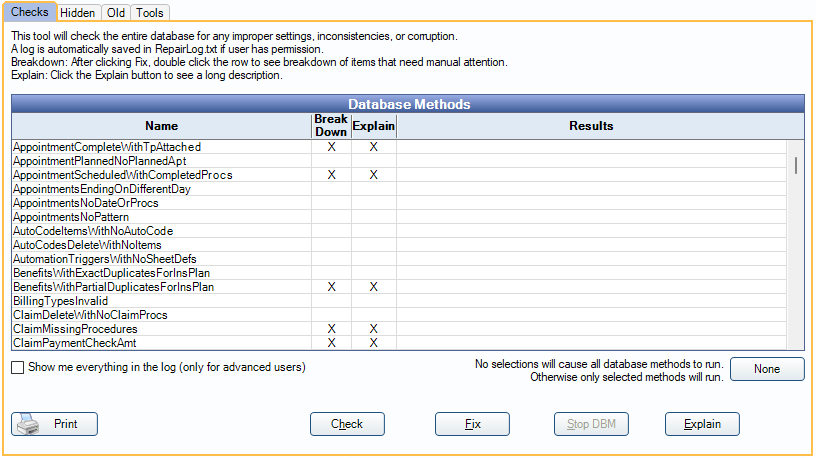

Database Maintenance
The Database Maintenance tool checks the database for improper settings, inconsistencies, or corruption.
In the Main Menu, click Tools, Database Maintenance.

The Database Maintenance tool is split into four tabs:
- Checks (see below)
- Hidden (see blow)
- Old (see below)
- Tools (see Database Maintenance Tools Tab)
Warnings:
- Do not run database maintenance on multiple computers simultaneously.
- We do not recommend running database maintenance during office hours because it can cause severe network slowness.
- If using replication, see Database Maintenance on Replication for instructions.
Checks Tab
Database maintenance is comprised of a list of methods. Each method is designed to resolve a specific problem.
- Highlight the methods to perform or click None to deselect all methods. When no methods are selected, all database methods run.
- Right-click on a method and select Hide to remove the method from the list. Hidden methods show on the Hidden tab.
Options
- Show me everything in the log: If checked, when a method or fix is run, the results include a detailed log. If unchecked, a truncated version of results show.
- Print: Click to send all results currently displaying to the printer.
- Check: Click to run database checks and display results.
- Fix: Click to run database checks and fix any errors that do not require a manual fix.
- Some changes made by the Database Maintenance tool are logged in the dbmlog table.
- If an X shows in the Breakdown column, double-click to see a breakdown of results
- Stop DBM: Click to stop the next method check/fix. The current method check/fix will finish.
- Explain: Select a method marked with an X in the Explain column. A long description of the selected method displays.
Every time any check or fix is run, MySQL checks every single table for corruption, so there may be a delay. As checks are complete, the Results log updates.
Database maintenance repair log files are saved to the A to Z folder in the DBMLogs subfolder.
Some errors detected during a check must be fixed manually. If the results log indicates a manual fix is needed, double-click on the row to open more details.

This window is non-modal. It can remain open while the issues are fixed.
Hidden Tab
Each database maintenance method can be hidden so it no longer shows in the list of Database Methods. This can be useful for methods an office doesn't use.

To unhide a method, right-click on the method and select Unhide.
Old Tab
Database maintenance methods that are no longer needed or outdated are moved to the Old tab. Methods can still be run from this window, but only do so if instructed by Open Dental Support as they can be unnecessary and time consuming.

Running old methods is done the same way as in the Checks tab above.
Troubleshooting
Why do I get the message: Log not saved to Repairlog.txt because the user does not have permission to access that file.
IT needs to grant the user permission to the DBMLogs folder (typically C:\OpenDentImages\DBMLogs).
Why do I get the message: WARNING! More than 50 workstations are connected to this database. Running DBM may cause severe network slowness. We recommend running this tool when fewer users are connected (possibly after working hours). Continue?
More than 50 workstations are connected to the database. We recommend waiting until after office hours to run database maintenance as it can cause slowness.
I was told to run database maintenance twice, why?
Some methods, when run, create additional results for other methods. Running database maintenance twice may be necessary to catch all results.